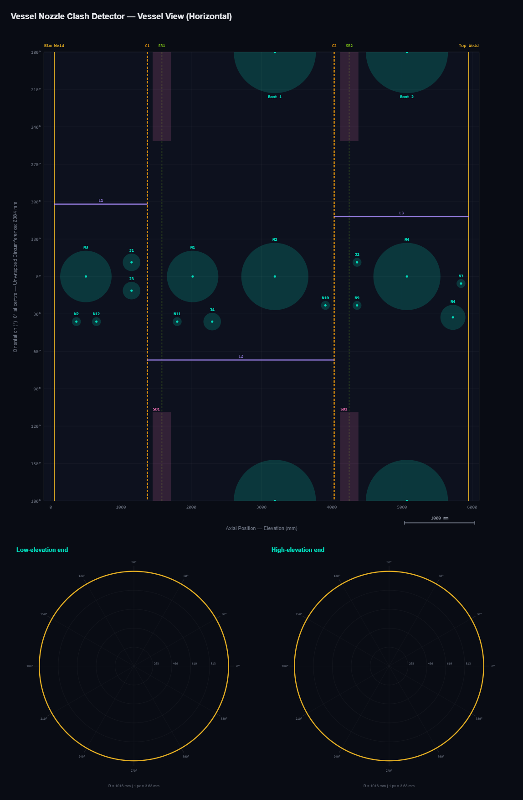

Review spacing across the vessel layout.
Nozzles, reinforcement pads, weld seams and attachments occupy overlapping regions of a vessel surface. The checker represents these regions and evaluates their separation against an engineer-entered minimum clearance. It helps locate tight pairs, compare layout revisions and communicate the resulting arrangement.
| Capability | What it covers |
|---|---|
| Vessel geometry | Horizontal or vertical configurations; cylindrical and conical shell sections; flat, hemispherical and 2:1 elliptical heads. |
| Nozzles and seams | Nozzle footprints, hillside offsets, finite longitudinal seams, circumferential seams, end welds and head weld lines. |
| Attachments | Clips, saddles, stiffening rings and supported internal attachment types, including intended connections and seam crossings. |
| Layout review | Developed-shell and head views, interactive relocation, linked nozzle movement, smart dimensions and tangent-line distance checks. |
These are implemented capabilities. The application example below verifies a cylindrical shell arrangement; it does not validate every supported geometry.
From input geometry to a reviewed arrangement.
- Start a model. Open the standalone HTML application in a modern desktop browser. Enter data manually or import a workbook using the supplied template. The Excel reader and writer are included; no server or installation is required.
- Define the vessel. Set configuration, diameter, thickness, head type, tangent-line datums and end-weld locations. Add shell sections when course geometry varies. Explicit sections take precedence over the general geometry.
- Set the clearance basis. Enter the required minimum spacing for the project. If needed, set a separate internal-attachment clearance and choose whether internal checks reference the full nozzle footprint or neck.
- Enter the occupied regions. Add nozzle positions, orientations, offsets, overall diameters and weld legs. Define seam positions and widths, then support and internal-attachment geometry. Identify intended connections.
- Run and inspect. Select Run Clash Check. Review failed and near-limit pairs, exclusions and crossings, then inspect their positions in Vessel View.
- Revise and retain. Edit coordinates or use relocation to explore changes. Confirm or cancel moves, rerun the checks, and export the selected arrangement and its results.
Calculate edge-to-edge clearance.
The checker first establishes the vessel surface, then measures separation and subtracts the occupied footprints. The remaining gap is compared with the specified minimum.
Shell geometry and nozzle footprints
For a cylindrical section, the outer radius is R = ID / 2 + section thickness. A nozzle footprint has radius r = Overall OD / 2 + weld leg. When Overall OD is absent, the source falls back to a pipe OD lookup, then to NPS × 25.4. An offset shell nozzle uses an orientation correction of asin(offset / R).
Nozzle-to-nozzle gap = center distance − r₁ − r₂
Δθ is the shorter angular separation in radians. A longitudinal seam is treated as a finite axial segment; its nearest point governs the distance. Circumferential seams use axial separation. The calculation subtracts half the entered seam thickness as the occupied weld-band half-width.
Other surfaces and attachments
Conical shell calculations use developed-cone distances and numerical path minimization across sections. Flat-head separation is planar, hemispherical separation follows a great-circle path, and 2:1 elliptical-head separation uses a numerical surface path.
Clips, saddles and rings are represented by axial and angular intervals, expanded by their weld legs. Internal attachments are checked on the inside surface. Intended linked connections and continuous parts crossing seams are distinguished from ordinary clearance failures.
Distance from tangent lines
Minimum nozzle-center distance from a tangent line combines the straight-flange distance, half the end-weld band, the required clearance and the nozzle footprint. This supports assessment of an existing vessel envelope before a length change is considered.
Read the results and keep the layout traceable.
| Output | How to use it |
|---|---|
| OK / CLASH | Identify evaluated pairs meeting or falling below the entered clearance criterion. Inspect the controlling gap, not only the total clash count. |
| N/A | Review intentional or excluded pairings, such as an on-saddle ring connection. An excluded comparison is not a passed spacing check. |
| CROSS | Review internal attachments crossing seams, including separately identified unavoidable full-ring crossings. |
| Vessel View | Locate items on the developed shell and end views. Use smart dimensions and relocation to investigate changes. |
| Saved records | Retain browser saves or HTML snapshots, export XLSX data/report sheets and a companion PNG vessel view. |
The standalone application includes its own Excel workflow. The parent toolkit's PV-Elite import bridge is not included. Interactive relocation supports engineering decisions; the tool does not automatically optimize the arrangement.
Apply the model with its assumptions visible.
The minimum clearance is a project input, not a universal built-in code requirement. Nozzle envelopes are circular approximations on the developed surface; the model does not reconstruct the full oblique nozzle intersection. The entered seam thickness is used as the occupied weld-band width. Check that both represent the intended fabrication details.
Rounding affects acceptance. Most external gaps are rounded to whole millimeters before comparison, so a raw 39.6 mm gap can pass a 40 mm setting. Check full-precision gaps and fabrication tolerances at tight locations. The offset calculation also clamps offsets exceeding the shell radius instead of rejecting them.
On-saddle ring overlaps and ring/longitudinal-seam pairs have explicit exclusion rules. Not every seam/seam combination is checked. The head knuckle warning uses an 80% radius heuristic. These results support layout review and do not replace stress calculations, fabrication review or verification against the governing specification.
Application example: closed drain drum.
I applied the tool to a horizontal vessel with a 2,000 mm inside diameter, three cylindrical shell courses and 17 shell nozzles, including two boots. The objective was to achieve the required spacing while retaining the existing 6,000 mm tangent-to-tangent length.
The tangent lines are at 0 and 6,000 mm; end-weld centers are at 50 and 5,950 mm. Explicit 16 mm shell courses override the 19 mm general thickness input, giving an outside radius of 1,016 mm. This illustrates why the checker resolves the section geometry before calculating distances.
- 6,000 mm
- tangent-to-tangent retained
- 40 mm
- case clearance criterion
- 17
- shell nozzles
- 0
- reported clashes
The closest gaps meet the case criterion
Re-running the supplied inputs reproduces the workbook's zero-clash result: 258 shell comparisons and 102 support comparisons, comprising 352 OK rows and eight N/A exclusions. No head nozzles or internals are entered.
| Pair | Gap (mm) | Margin (mm) |
|---|---|---|
| SR2 / N9 | 40 | 0 |
| SR2 / J2 | 40 | 0 |
| N3 / Top Weld | 46 | 6 |
| N4 / Top Weld | 46 | 6 |
| N10 / C2 | 59 | 19 |
| SD1 / C1 | 60 | 20 |
| SR1 / M1 | 67 | 27 |
| SD2 / C2 | 70 | 30 |
The controlling ring-to-nozzle spacing
SR2 is centered at 4,250 mm with a 12 mm axial width and a 6 mm weld leg. N9 and J2 are at 4,360 mm, each with an 84 mm overall OD and a 16 mm weld leg.
Both governing gaps are exactly 40 mm before rounding. They meet the entered criterion with no additional modeled spacing reserve.
The high-end nozzles remain within the vessel
N3 clears the high-end weld by 5,950 − 5,840 − 12 / 2 − (84 / 2 + 16) = 46 mm. N4 also clears it by 46 mm, using its 314 mm overall OD and 5,725 mm axial position.
The supplied vessel layout.

Reproduce the result and examine its limits.
The standalone extraction preserves the module's calculation logic and bundled Excel reader/writer. Ten focused numerical checks cover footprint sizing, offset mapping, angular wrap, cylinder distances, finite seam endpoints, end-weld spacing, rounding and a deliberate clash. A separate calculation recomputes all 255 nozzle comparisons on the cylindrical shell. Moving N3 outward by 10 mm reduces its end-weld gap to 36 mm and triggers a clash.
The governing ring gaps in this case are exactly 40 mm before rounding, and the two high-end nozzle gaps are exactly 46 mm. The ring locations therefore have no additional modeled spacing reserve.
The closed drain drum workbook supplies the 40 mm criterion without an attached governing specification clause. No head nozzles or internals are entered, so their empty result groups are not evidence of validation for those branches.
Source record
the supplied closed drain drum workbook, exported 20 November 2026: Vessel Parameters B2:B16; Shell Sections A2:F4; Nozzles A2:H18; Long Welds A2:E4; Circ Welds A2:C3; Saddles A2:F3; Stiffening Rings A2:E3; and the zero-clash summary in Vessel View B2:B5 and B8. The original workbook, module, test runner and detailed verification records are retained in the standalone project.
Preserve the envelope and avoid an extension.
This work brought the required weld spacing into the existing 6,000 mm tangent-to-tangent envelope. Avoiding an extension prevented the associated cost and schedule impacts, as reported from my project work.
The supplied study records the resulting arrangement. It does not include an earlier rejected layout, a cost estimate or a schedule comparison, so no monetary saving or number of days is claimed.